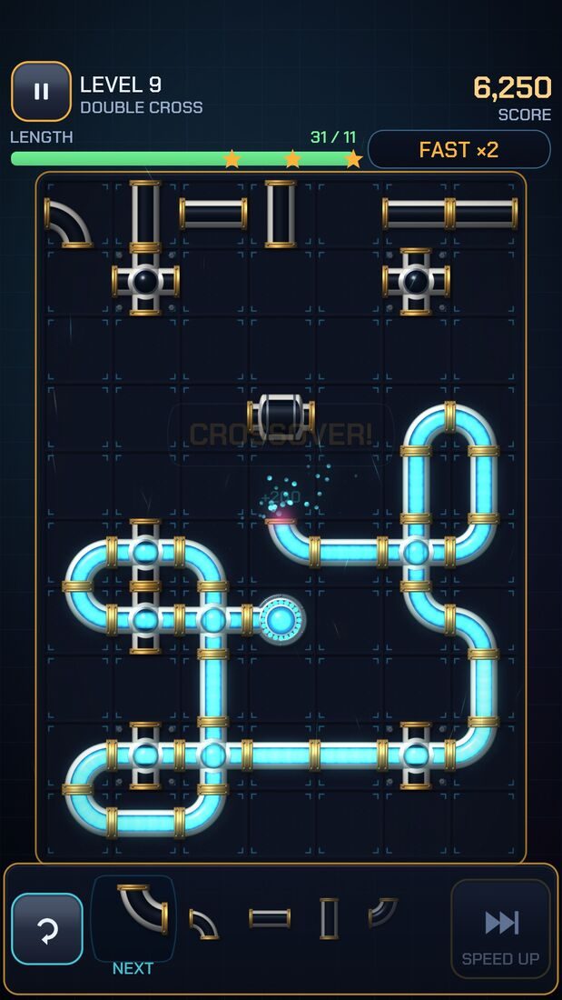
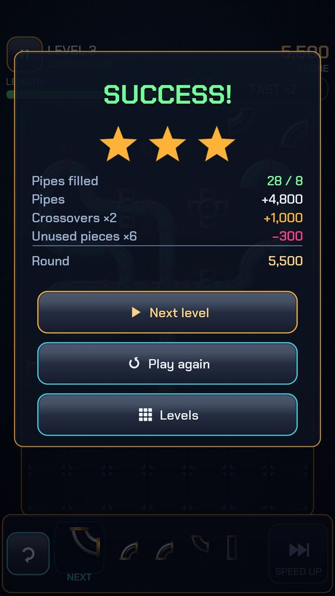
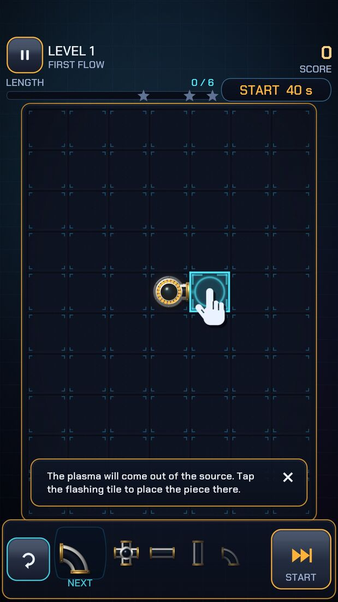
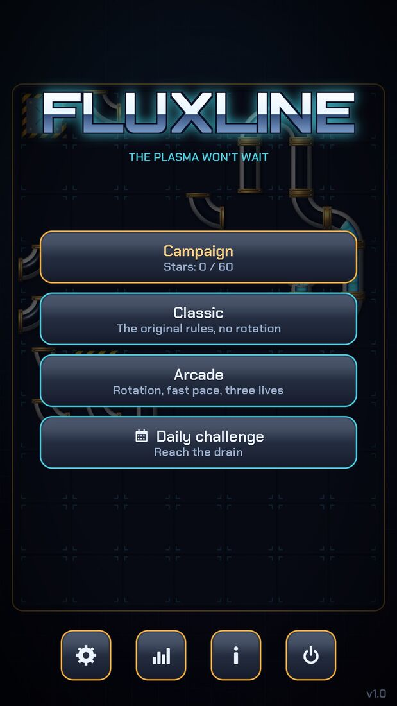
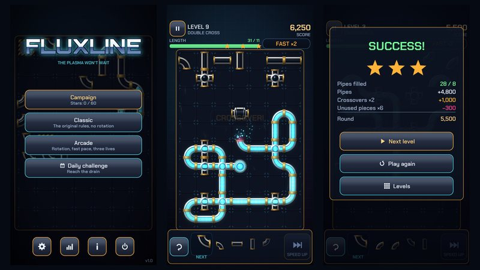

Fluxline
Every version of this page since 11 Nov 2026, newest first: what changed, and the captures and videos as the page showed them at the time.
Chaque version de cette page depuis le 11 nov. 2026, de la plus récente à la plus ancienne : ce qui a changé, et les captures et vidéos telles que la page les montrait à l’époque.
គ្រប់កំណែនៃទំព័រនេះ តាំងពីថ្ងៃទី 11 វិច្ឆិកា 2026 ពីថ្មីបំផុតទៅចាស់៖ អ្វីដែលបានផ្លាស់ប្តូរ និងរូបថតអេក្រង់ និងវីដេអូ ដូចដែលទំព័របានបង្ហាញនៅពេលនោះ។
Nothing on this page has been regenerated: every capture and video is the file the site published at the time, recovered from its Git history. What the site never published is not here. Since 21 November 2026, every change to the project page adds a version here, and the captures, videos and Last changes it replaces are kept.Rien sur cette page n’a été régénéré : chaque capture et chaque vidéo est le fichier que le site publiait à l’époque, retrouvé dans son historique Git. Ce que le site n’a jamais publié n’y figure pas. Depuis le 21 novembre 2026, chaque changement de la page du projet ajoute ici une version, et les captures, vidéos et derniers changements qu’il remplace sont conservés.គ្មានអ្វីនៅលើទំព័រនេះត្រូវបានបង្កើតឡើងវិញទេ៖ រូបថតអេក្រង់ និងវីដេអូនីមួយៗ គឺជាឯកសារដែលគេហទំព័របានផ្សាយនៅពេលនោះ ដែលបានយកមកវិញពីប្រវត្តិ Git របស់វា។ អ្វីដែលគេហទំព័រមិនដែលផ្សាយ មិនមាននៅទីនេះទេ។ តាំងពីថ្ងៃទី 21 ខែវិច្ឆិកា ឆ្នាំ 2026 ការផ្លាស់ប្តូរនីមួយៗនៃទំព័រគម្រោង បន្ថែមកំណែមួយនៅទីនេះ ហើយរូបថតអេក្រង់ វីដេអូ និងការផ្លាស់ប្តូរចុងក្រោយ ដែលវាជំនួស ត្រូវបានរក្សាទុក។
From the latest to the first.De la plus récente à la première.ពីកំណែចុងក្រោយ ដល់កំណែដំបូង។
-
Private repositoryDépôt privérepository ឯកជន
The View repository button, which led visitors to a page GitHub does not show since the repository is private, becomes a padlock label: Private repository.
Le bouton Voir le dépôt, qui menait les visiteurs vers une page que GitHub n’affiche pas puisque le dépôt est privé, devient une étiquette avec un cadenas : Dépôt privé.
ប៊ូតុងមើលឃ្លាំងកូដ ដែលនាំអ្នកទស្សនាទៅកាន់ទំព័រដែល GitHub មិនបង្ហាញ ព្រោះ repository ជាឯកជន ក្លាយជាស្លាកមួយដែលមានរូបសោ៖ repository ឯកជន។
-
Last changesDerniers changementsការផ្លាស់ប្តូរចុងក្រោយ
The page now ends with a summary of the repository’s latest commits, in English, French and Khmer.
La page se termine désormais par un résumé des derniers commits du dépôt, en anglais, en français et en khmer.
ឥឡូវនេះ ទំព័របញ្ចប់ដោយសេចក្តីសង្ខេបនៃ commit ចុងក្រោយរបស់ repository ជាភាសាអង់គ្លេស បារាំង និងខ្មែរ។
-
The page in KhmerLa page en khmerទំព័រជាភាសាខ្មែរ
The page now reads in Khmer as well as English and French; the language button cycles EN / FR / KM and follows the choice made on the home page.
La page se lit désormais aussi en khmer ; le bouton de langue passe d’EN à FR puis KM et suit le choix fait sur l’accueil.
ឥឡូវនេះ ទំព័រនេះអាចអានជាភាសាខ្មែរ បន្ថែមលើភាសាអង់គ្លេស និងបារាំង។ ប៊ូតុងភាសាប្តូរវេន EN / FR / KM ហើយធ្វើតាមជម្រើសដែលបានធ្វើនៅទំព័រដើម។
-
Its own presentation pageSa page de présentationទំព័របង្ហាញផ្ទាល់ខ្លួន
The game gets a page of its own, in English and French, with a gallery of captures from its repository; its card on the home page now opens it.
Le jeu reçoit sa propre page, en anglais et en français, avec une galerie de captures tirées de son dépôt ; sa carte sur l’accueil y mène désormais.
ហ្គេមនេះទទួលបានទំព័រផ្ទាល់ខ្លួន ជាភាសាអង់គ្លេស និងបារាំង ជាមួយវិចិត្រសាលរូបថតអេក្រង់ពី repository របស់វា។ ឥឡូវនេះ កាតរបស់វានៅលើទំព័រដើម បើកទៅទំព័រនេះ។
4 captures4 capturesរូបថតអេក្រង់ 4
On the pageSur la pageនៅលើទំព័រ 
On the pageSur la pageនៅលើទំព័រ 
On the pageSur la pageនៅលើទំព័រ 
On the pageSur la pageនៅលើទំព័រ -
A capture on the home page cardUne capture sur la carte de l’accueilរូបថតអេក្រង់លើកាតនៅទំព័រដើម
The project’s card on the home page shows a screenshot for the first time.
La carte du projet sur la page d’accueil affiche une capture d’écran pour la première fois.
កាតរបស់គម្រោងនៅលើទំព័រដើម បង្ហាញរូបថតអេក្រង់ជាលើកដំបូង។
1 capture1 captureរូបថតអេក្រង់ 1
On the pageSur la pageនៅលើទំព័រ